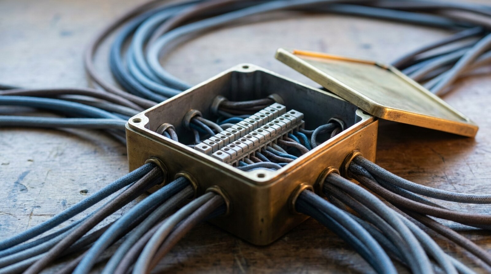

R version 4.6.1 (2026-06-24)
Platform: aarch64-apple-darwin25.4.0
Running under: macOS Tahoe 26.6.2
Matrix products: default
BLAS: /opt/homebrew/Cellar/openblas/0.3.34/lib/libopenblasp-r0.3.34.dylib
LAPACK: /opt/homebrew/Cellar/r/4.6.1/lib/R/lib/libRlapack.dylib; LAPACK version 3.12.1
locale:
[1] en_US.UTF-8/en_US.UTF-8/en_US.UTF-8/C/en_US.UTF-8/en_US.UTF-8
time zone: America/Los_Angeles
tzcode source: internal
attached base packages:
[1] stats graphics grDevices utils datasets methods base
loaded via a namespace (and not attached):
[1] htmlwidgets_1.6.4 compiler_4.6.1 fastmap_1.2.0 cli_3.6.6
[5] tools_4.6.1 htmltools_0.5.9 parallel_4.6.1 otel_0.2.0
[9] yaml_2.3.12 rmarkdown_2.31 knitr_1.51 jsonlite_2.0.0
[13] xfun_0.58 digest_0.6.39 rlang_1.3.0 evaluate_1.0.5 A Home Server for a Five-Machine Research Fleet
security
linux
storage
backup
tailscale
samba
How a repurposed 2016 MacBook Pro running Linux Mint serves a five-machine research fleet as its Borg repository host, its Time Machine share, and its remote of last resort for code that cannot go to GitHub. Covers the hardware realities of a laptop server, stable addressing over Tailscale, a default-deny firewall, an ext4 SSD with TRIM over USB, and the Samba details that kept the share unreachable until they were fixed.
Introduction
Five machines are enough to need a center. This post describes the one in our fleet: a 2016 MacBook Pro, retired from daily use, running Linux Mint, and serving the other four machines as their backup destination and as a home for the few things that must not leave the house.
Note
Part 6 of the security series; start with Security Foundations for a Multi-Machine Research Fleet for the overview.
The server is called mercury. The other machines are julia (the primary workstation), athena (a laptop, and the only Mac running Time Machine), joe (a secondary Mac), and zeus (a Linux laptop). The backup policy that runs against mercury is the subject of Research Backup Architecture; this post is about the machine itself: what it does, how it is reached, how it is protected, and the configuration details that took more than one attempt to get right.
Motivations
- Four machines backing up nightly need a destination that is always on, inside the house, and under our control.
- athena’s Time Machine disk was a USB drive that had to be plugged into athena; a network share removes that dependency.
- Some repositories hold material that is forbidden from ever having a GitHub remote. They still need an off-machine copy.
- An old laptop was already on hand, with 16 GB of memory and a 1 TB internal SSD, and a battery that rides out short power cuts.
- Every service added to a machine on the LAN is a new way in. The server needed to be closed by default and opened deliberately.
Objectives
- Document the server’s roles and, as importantly, what it does not do.
- Show how a laptop is made to behave like a server: no sleep on lid close, no suspend, full-disk encryption.
- Explain why scripted connections use Tailscale addresses and only the Time Machine share uses the LAN.
- Give the firewall policy, the external SSD setup, and the Samba share configuration as trimmed, real excerpts.
- Record the failures, each of which produced a rule worth keeping.

What Is the Home Server For?
mercury has five roles and several deliberate non-roles.
| Role | Mechanism | Clients |
|---|---|---|
| Borg repository host | one repository per machine under /srv/backup, append-only access |
julia, athena, joe, zeus |
| Time Machine share | Samba with vfs_fruit, on an external SSD |
athena |
| Remote of last resort | bare git repositories under /srv/git |
any machine |
| Research data area | plain directory under /srv/data, fetched, not synced |
any machine |
| Simulation host (one of two) | rootless Podman containers and a one-at-a-time job queue; see Offloading R Simulations to a Home Server | julia, athena, joe |
The fifth role was added last and is the one that sits least comfortably with the others: it runs other people’s code, here the author’s own simulation scripts, on the machine that holds the backups. The limitations section returns to this, and the second host in the fleet exists partly so that heavy or untrusted work has somewhere else to go.
The server’s own home directory and its /srv/git and /srv/data folders are backed up nightly in the other direction, to a Borg repository on julia, so the backup destination is itself backed up.
What it does not do matters as much:
- It runs no file-sync daemon. The fleet left Dropbox precisely to stop every machine holding a mutable copy of everything; see Migrating Off Dropbox.
- It is not reachable from the internet. Remote access goes through Tailscale.
- It does not hold the backup passphrases. It stores four encrypted Borg repositories it cannot read.
- It does not hold the password store’s remote, which lives on one of the Macs; see Setting Up pass.
- It does not yet run an object store. Whether one is worth running for research data is argued in Object Storage for Research Data.
Prerequisites
- A spare machine with enough disk for every client’s backups plus growth. mercury has a 1 TB internal SSD for the Borg repositories and a separate 1 TB USB SSD for Time Machine.
- Linux (here Linux Mint 22.3) installed with full-disk encryption (LUKS). Encryption at rest is a fleet-wide control; see the series overview.
- Tailscale installed on the server and on every client.
borgbackup,samba, andufwfrom the distribution’s packages.- A login on the server for the account that owns the backups.
A Laptop That Behaves Like a Server
A laptop wants to sleep. Three settings stop it.
The lid switch is ignored whether or not the machine is on power, through a drop-in for systemd-logind:
# /etc/systemd/logind.conf.d/99-mercury-no-sleep.conf
# mercury is the LAN hub; it must not sleep.
[Login]
HandleLidSwitch=ignore
HandleLidSwitchExternalPower=ignore
HandleLidSwitchDocked=ignore
HandleSuspendKey=ignore
HandleHibernateKey=ignore
IdleAction=ignoreThe sleep and suspend targets are masked, so nothing (a desktop power applet, an idle timer) can suspend the machine behind the drop-in’s back:
sudo systemctl mask sleep.target suspend.target
systemctl is-enabled sleep.target suspend.target
# masked
# maskedThe remaining hardware realities are less tractable:
- No wired network. The 2016 MacBook Pro has no Ethernet port, and mercury runs on Wi-Fi. It has two Wi-Fi adapters, the built-in one and a USB adapter, both joined to the home network. That detail caused one of the Samba failures described below.
- A battery is not a UPS. The battery carries the machine through a short outage, but there is no clean-shutdown trigger and the battery is old.
- LUKS needs a passphrase at boot. An unattended reboot stops at the unlock prompt until someone types it. This is the server’s equivalent of the FileVault behavior described in the series overview, and it is the price of encryption at rest.
Addressing: Tailscale for Scripts, the LAN for Samba
Every scripted connection to mercury uses its Tailscale address. Only Time Machine, through Samba, uses the LAN. (The simulation client was briefly an exception: on two of the Macs it defaulted to the server’s .local multicast name. That name depends on multicast DNS, which failed on the first lookup after a quiet period on both Macs tested (then worked), so all three Macs now default to the Tailscale alias, and the .local aliases are used only when typed. The cost is that submitting a job needs Tailscale running even at home.)
The reason is a failure. mercury originally appeared in each client’s SSH configuration under its LAN address, which the home router assigns by DHCP. After a reboot in late September 2026 the router handed mercury new addresses. Nothing announced the change: the Borg jobs on athena, joe, and zeus simply timed out every night until a status check found them. julia was unaffected because its configuration already used the Tailscale address, which does not change when the LAN does.
The fix had a second lesson in it. Each client names the server in two places: the general ~/.ssh/config, and a separate SSH config that the Borg script passes with ssh -F so that only the restricted backup key is offered. Correcting the first file left the backups failing; only correcting the second fixed them. The client side is described in the backup post; on this side, the rule is simple:
- Scripts address the server by its Tailscale address (or its Tailscale name), never by a DHCP-assigned LAN address.
- Services that must be reached over the LAN, here the Samba share, should have their LAN address reserved in the router, so that a reboot cannot move them.
- When the address of a machine changes, search every client for every file that names it before declaring the fix done.
One more addressing detail affects Samba clients. On the Macs, mercury.local (multicast DNS) resolves to both Wi-Fi adapters’ IPv4 addresses and to two IPv6 link-local addresses. A client that tries them one at a time can spend tens of seconds on the addresses that do not answer before reaching one that does.
The Firewall: Default Deny
Before Samba was added, mercury ran with its firewall installed but inactive, relying on the home router and on the restricted Borg keys. Adding a second network-facing service was the point at which that stopped being defensible. ufw now denies all incoming connections by default and opens three things:
# Policy as configured, shown as the commands that produce it.
# The LAN subnet is shown as a documentation range.
sudo ufw default deny incoming
sudo ufw default allow outgoing
sudo ufw allow in on tailscale0
sudo ufw allow from 192.0.2.0/24 to any port 22 proto tcp
sudo ufw allow from 192.0.2.0/24 to any port 445 proto tcp
sudo ufw enableThe Tailscale interface is trusted as a whole because every machine on the tailnet is one of ours and the Borg traffic arrives that way. SSH and Samba are additionally reachable from the LAN subnet and from nowhere else. Enabling a firewall over SSH is the moment to be careful: allow SSH first, keep the existing session open, and test a second login before closing the first.
Samba applies its own restriction on top of the firewall, so a mistake in either layer alone does not expose the share:
# /etc/samba/smb.conf, [grey] share (excerpt)
hosts allow = 192.0.2.0/24 127.0.0.1
hosts deny = 0.0.0.0/0
valid users = <backup-user>
guest ok = noThe Borg Repository Host
Each client has its own repository under /srv/backup/<machine>, and its own SSH key. On the server, ~/.ssh/authorized_keys pins each key to one command and one repository:
command="/usr/local/bin/borg serve --append-only \
--restrict-to-repository /srv/backup/athena",restrict ssh-ed25519 ...(Shown wrapped; in the file it is one line per key.) The effect:
- A client key cannot open a shell, read another machine’s repository, or delete existing archives. The worst an attacker holding one key can do is add data to that one repository.
- Because access is append-only, clients cannot prune. Pruning runs quarterly and by hand, with the passphrase typed at the time, because the server holding the repositories never holds their passphrases. The policy and its reasoning are in Research Backup Architecture.
- The repositories live on the internal SSD, not on the external Time Machine disk, so the two backup tiers do not share a device.
The External SSD
athena’s Time Machine disk, a 1 TB Samsung T7 USB SSD, moved from athena’s desk to mercury.
ext4, After an HFS+ Experiment Failed
The first format was HFS+, chosen deliberately: HFS+ can be read natively by both Linux and macOS, so if mercury died the disk could be plugged straight into a Mac. No guide documents HFS+ under Samba as a supported Time Machine target, and the experiment showed why. The drive dropped off the USB bus in the middle of a write; the Linux HFS+ checker, fsck.hfsplus, then crashed on the drive’s long device path (a known bug, Launchpad #1450760), so the volume could not be verified. A Time Machine destination that cannot be checked after an unclean disconnect is not one to rely on.
The disk was reformatted as ext4, which the Samba Time Machine guides do document. The cost is real and accepted: macOS cannot read the disk directly, so recovering it without mercury needs a Linux machine or a third-party ext4 driver.
Mounting: nofail and a Mountpoint Guard
# /etc/fstab (UUID shortened)
UUID=... /media/grey ext4 defaults,noatime,nofail,\
x-systemd.device-timeout=10s 0 2nofail with a short device timeout lets mercury boot normally when the disk is unplugged; without it, a missing USB drive drops a Linux machine into emergency mode at boot, which on a headless server means a trip to the keyboard.
The opposite failure is quieter and worse: with the disk absent, /media/grey is an empty directory on the internal SSD, and Samba would happily serve it. Time Machine would then fill the server’s system disk. The share refuses to start a session unless the disk is actually mounted:
# /etc/samba/smb.conf, [grey] share (excerpt)
root preexec = /usr/bin/mountpoint -q /media/grey
root preexec close = yesroot preexec close = yes turns a failing pre-exec command into a refused connection.
TRIM over USB
Linux does not pass TRIM to most USB SSDs by default; the SCSI layer reports the device’s provisioning mode as full, and fstrim answers that discard is not supported. A udev rule switches this drive model to unmap whenever it appears:
# /etc/udev/rules.d/50-grey-trim.rules
ACTION=="add|change", ATTRS{idVendor}=="04e8", \
ATTRS{idProduct}=="4001", SUBSYSTEM=="scsi_disk", \
ATTR{provisioning_mode}="unmap"(Shown wrapped; udev needs one line.) Check it and trim:
cat /sys/block/sda/device/scsi_disk/*/provisioning_mode
# unmap
sudo fstrim -v /media/greyThe first fstrim after the reformat released the whole drive, 915.6 GiB. The vendor and product IDs come from lsusb; the rule is specific to one drive model, which is intended, since forcing unmap on a bridge that does not support it can cause errors.
Research Data and Git Remotes of Last Resort
Two smaller roles round out the server.
/srv/git holds bare repositories for work that must never have a GitHub remote, such as repositories holding subject-level clinical data. A clone over SSH (git clone mercury:/srv/git/<name>.git) gives them an off-machine copy without a third party.
/srv/data holds research data that is not in git. Clients fetch from it; they do not each keep a synchronized, mutable copy, which is the model that produced dozens of conflict copies under Dropbox. One practical warning from seeding it: macOS ships openrsync as rsync, and during the migration it twice exited with status 0 while silently omitting thousands of files. Seed with a tar stream, or install GNU rsync, and count files on both sides afterward.
Whether this directory should become an S3-compatible object store, with content hashes and versioning, is argued in Object Storage for Research Data. Every lesson in this post (stable addressing, a firewall first, waiting for the network at boot, checking real listening sockets) would apply to that service unchanged.
Verification
Run on the server after any change and after every reboot:
# Encrypted root and the SSD mounted read-write
lsblk -o NAME,TYPE,FSTYPE,MOUNTPOINT
findmnt -n -o TARGET,FSTYPE,OPTIONS /media/grey
# TRIM enabled on the USB SSD
cat /sys/block/sda/device/scsi_disk/*/provisioning_mode
# Samba up and listening on the LAN adapters, not just loopback
systemctl is-active smbd
ss -tln | grep ':445 '
# Firewall active with the expected rules
sudo ufw status verbose
# Sleep impossible
systemctl is-enabled sleep.target suspend.targetFrom a client:
# macOS: the share answers on each LAN address
nc -z -G 5 <server-lan-address> 445
# Borg: the restricted key reaches only borg serve
ssh -F ~/.borg/ssh_config mercury true
# expected: a borg usage message, not a shellThe last check is the one that proves the restriction: if true runs, the forced command is not in effect.
Things to Watch Out For
- DHCP addresses move. Address the server by its Tailscale address in scripts, and reserve LAN addresses for LAN services.
- Server names live in more than one file. A restricted-key setup has its own SSH config; search every client for every file that names the server.
- A status check must cover every machine. The first check after the address change looked only at the Macs; zeus’s backups had been failing just as long and were found a day later.
bind interfaces onlyplus a late network means loopback only. Order Samba afternetwork-online.targetand verify withss.- An unmounted mount point is an empty directory. Guard network shares with
mountpoint -q, and usenofailso a missing disk does not stop boot. - USB SSDs do not TRIM by default on Linux. Set
provisioning_modewith a udev rule scoped to the drive model. - HFS+ on Linux is not a recovery format. Without a working checker, cross-platform readability does not help.
- Enabling a firewall over SSH can lock you out. Allow SSH before
ufw enable, and test a second session. - LUKS and unattended reboots do not mix. Plan for someone to unlock the server after power loss or a kernel update.
What Did We Learn?
Lessons Learned
- The failures were silent. Borg timed out, Samba listened on loopback, and nothing reported either. Each was found by reading a log or checking a socket, not by an alert.
- Stable names beat convenient ones. The LAN address was easy to type and wrong a week later; the Tailscale address has not changed.
- Defense in depth is cheap here. The firewall, Samba’s
hosts allow, a separate Samba password, and client-side encryption each cover a mistake in the others. - Experiments on a backup target need an exit. HFS+ was a reasonable hypothesis, tested, and abandoned the first time it could not be verified.
- A server that cannot read what it stores is a smaller target, for confidentiality. Holding encrypted repositories without their passphrases keeps a compromise of mercury from becoming a compromise of every machine’s data. It does not protect availability: Borg’s append-only mode is enforced by the restricted keys, not by file permissions, so code running as the account that owns the repositories could delete the backups even though it could not read them. Simulation jobs originally ran as that account, which made the server’s second role a route to its first. They now run as a separate unprivileged account (described in Offloading R Simulations to a Home Server), whose file permissions give it no access to the repositories.
Limitations
- One server is one point of failure for the Borg tier; the cloud copies and the server’s own backup to julia mitigate this, but a restore onto replacement hardware has not yet been rehearsed.
- Wi-Fi is the only network path, and the server’s throughput sets the pace of large first backups (a full Time Machine baseline runs for many hours).
- The Time Machine share is treated as a convenience tier. athena’s research data also exists in Borg and in its cloud copies; the share itself has no second copy.
- There is no automated alerting on the server’s services; the verification list above is run by hand.
- Simulation jobs run as a dedicated account,
simrun, with nosudoand no access to the backup repositories, in rootless containers under that account. A job can still fill the disk or keep the CPU busy, so a runaway job affects availability, andsimrunowns the simulation data store. Mercury remains the slower of the two simulation hosts, with four threads.
Opportunities for Improvement
- A USB Ethernet adapter and a wired link to the router.
- A small UPS with a shutdown trigger, so power loss ends in a clean shutdown rather than a drained battery.
- A daily check that reports the services’ status and listening sockets, alongside the backup status check recommended in the backup post.
- A scheduled restore test from both the Borg repositories and the Time Machine share.
- An object store for research data, if the argument in post 7 holds up in practice.
Wrapping Up
A home server for a small fleet does not need to be new or fast. It needs to stay awake, keep a stable address, refuse everything it was not asked to accept, and fail loudly enough to be noticed. The old MacBook Pro does the first three well. The fourth is still done by reading logs, which is the reason the series keeps returning to monitoring.
Takeaways:
- Address servers by a stable overlay name (Tailscale), not by a DHCP-assigned LAN address.
- Start with a default-deny firewall and open each service deliberately, then restrict it again at the service.
- Store backups the server cannot decrypt, through keys that can only append.
- For Samba on Linux: ext4, a mountpoint guard,
nofail, TRIM via udev, and a boot ordering dependency on the network. - After every reboot, check what is actually listening, not what the configuration intends.
See Also
Security series:
- Security Foundations for a Multi-Machine Research Fleet
- Setting Up pass: a Unix Password Manager
- Secrets Management for the Workflow Construct
- Migrating Off Dropbox: Beyond Dotfiles
- Research Backup Architecture: Borg, Cloud Copies, and Time Machine
- A Home Server for a Five-Machine Research Fleet (this post)
- Object Storage for Research Data: The Layer Git Cannot Hold
- Running the Quarterly Security Audit for the First Time: What Actually Broke
External references:
- Samba
vfs_fruitmanual page: https://www.samba.org/samba/docs/current/man-html/vfs_fruit.8.html - BorgBackup documentation,
borg serveand append-only mode: https://borgbackup.readthedocs.io/en/stable/usage/serve.html - Tailscale documentation: https://tailscale.com/kb
- Ubuntu
ufwdocumentation: https://help.ubuntu.com/community/UFW - Launchpad bug #1450760,
fsck.hfspluscrash: https://bugs.launchpad.net/bugs/1450760 - ArchWiki, Solid state drive, TRIM on USB devices: https://wiki.archlinux.org/title/Solid_state_drive
Reproducibility
What was checked. The configuration excerpts (logind drop-in, masked sleep targets, Samba [global] binding and [grey] share, the smbd drop-in, the fstab line, the udev rule, the Borg forced commands) were read from the running server on 2026-10-01 and are shown trimmed, with the LAN subnet replaced by a documentation range and the filesystem UUID removed. The firewall policy is given as the commands that produce it, from the build notes; ufw status output was not captured for this post. Listening sockets, the mount, and TRIM were verified on the server; port 445 on both LAN addresses was verified from athena. The simulation role was added after those checks (2026-10-03 onward); for this post, only the file ownership behind the limitation above was read from the server on 2026-10-12: the Borg repositories and the Time Machine drive are owned by the backup account, which is in the sudo group. The separate simrun account was created on 2026-10-15; that it has no sudo membership and that the repositories are mode 0750 for another owner and group was read from the account listing and file modes, not tested by trying to read them as simrun. The simulation design itself is verified in its own post.
Versions. Server: Linux Mint 22.3, kernel 7.0.0-31, Samba 4.19.5, BorgBackup 1.4.5, Tailscale 1.102.4. Clients: macOS 26.
Not done. A restore from the Time Machine share, and a full restore from Borg onto replacement hardware, have not been tested.
AI involvement in this post: drafting was AI-assisted, and the configuration was read and verified with assistance. The design decisions and editorial judgment are the author’s.
Session information:
Rendered on 2026-10-15 at 12:23 PDT.
Source: ~/prj/ryyblog/posts/sec-five-machine-storage/analysis/report/index.qmd
Let’s Connect
Questions, suggestions, or corrections are welcome.
- GitHub: rgt47
- Twitter/X: @rgt47
- LinkedIn: Ronald Glenn Thomas
- Email: Contact form
I would like to hear from you if:
- You find an error, or a better approach to anything in this series.
- You run a small research fleet and have found where this design breaks.
- You want to compare notes on backups, secrets, or reproducible research infrastructure.